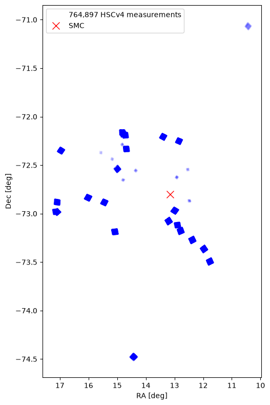
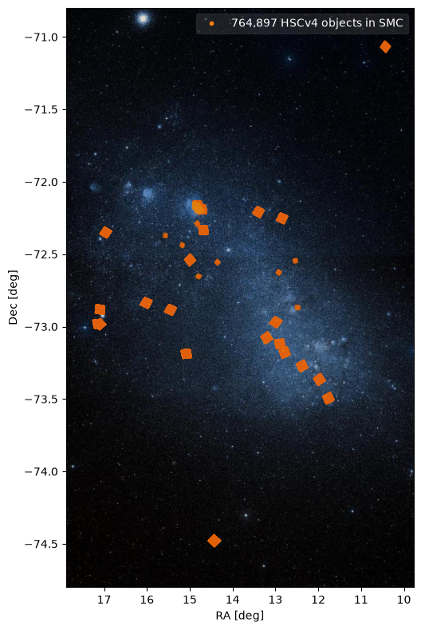
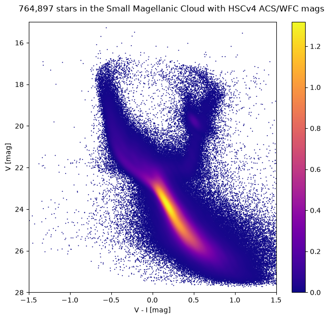

Hubble Source Catalog CasJobs Notebook: SMC Color-Magnitude Diagram#
The MAST CasJobs interface supports queries to the current and previous versions of the Hubble Source Catalog. It allows searches of the summary table (with multi-filter mean photometry) and the detailed table (with all the multi-epoch measurements). This notebook shows how to query HSCv4 tables from Python using the mastcasjobs module.
This is based on part of HSC Use Case #2.
It searches the HSC for point-like objects in the Small Magellanic Cloud (SMC) with ACS/WFC V and I band measurements,
selects a subset of those objects in a V-I color range (retrieving a table with more than 700,000 rows),
plots the positions of the objects on the sky,
plots the sky positions overlaid on a DSS color image, and
plots the color-magnitude diagram for the selected objects.
The whole process takes about 5 minutes to complete. It is faster on re-runs because the table of SMC measurements is saved to a table in your CasJobs MyDB database.
Instructions:#
Complete the initialization steps described below.
Run the notebook.
Running the notebook from top to bottom takes about 5 to 10 minutes. After the first run it takes less than a minute.
Table of Contents#
Initialization#
Set up your CasJobs account information#
You must have a MAST Casjobs account. Note that MAST Casjobs accounts are independent of SDSS Casjobs accounts.
For easy startup, you can optionally set the environment variables CASJOBS_USERID and/or CASJOBS_PW with your Casjobs account information. The Casjobs user ID and password are what you enter when logging into Casjobs.
This script prompts for your Casjobs user ID and password during initialization if the environment variables are not defined.
Imports#
This tutorial requires the mastcasjobs and fastkde modules, along with the usual modules astropy, numpy, scipy and matplotlib.
import time
import os
import numpy as np
import matplotlib.pyplot as plt
from PIL import Image
import requests
from io import BytesIO
import mastcasjobs
import astropy
from astropy.coordinates import SkyCoord
from fastkde import fastKDE
from scipy.interpolate import RectBivariateSpline
# set width for pprint
astropy.conf.max_width = 150
Set up CasJobs environment#
This prompts for your username and password if they are not already defined in the environment variables CASJOBS_USERID and CASJOBS_PW. After this cell has been run, they are automatically used for subsequent queries using mastcasjobs.
import getpass
if not os.environ.get('CASJOBS_USERID'):
os.environ['CASJOBS_USERID'] = input('Enter Casjobs UserID:')
if not os.environ.get('CASJOBS_PW'):
os.environ['CASJOBS_PW'] = getpass.getpass('Enter Casjobs password:')
Helper function for crowded scatterplots#
scatterplot() does a scatterplot of a crowded distribution using a kernel density estimator from fastkde. If thin=True, it selects a sample of points in crowded regions to speed up plotting. This converts the fastkde PDF values (which are probabilities per unit area using the x and y data units) to the expected number of points within a region covered by the marker on the plot. It then picks only a few points to plot in crowded regions while selecting all the points in uncrowded regions.
Inputs:
axis matplotlib axis objectx,yare positions for plotxlog,ylogindicate whether log of parameter should be plotted (that is needed to get the kde to work correctly in log plots)verbose= True prints additional infofigis matplotlib figure object (used to get page scale)thin= False can be used to turn off thinning of plotted pointsmarkersizeis point size for plot (default should be OK)colorbar= True means to show a colorbar. In that case, fig becomes a required parameter.Other parameters (including
cmap) are passed toax.scatter
Returns an array of subscripts to plot from zs.
def scatterplot(ax, x, y, xlog=False, ylog=False, verbose=False,
fig=None, thin=True, colorbar=False, markersize=2, over=10,
cmap='plasma', **kw):
"""Do scatterplot using kde
ax is matplotlib axis object
x, y are positions for plot
xlog, ylog indicate whether log of parameter should be plotted
fig is matplotlib figure object (used to get page scale)
thin = False can be used to turn off thinning of plotted points
markersize is point size for plot (default should be OK)
To show a colorbar, set the colorbar parameter to True. In that
case, fig becomes a required parameter.
"""
if colorbar and fig is None:
raise ValueError("Must specify fig parameter to get colorbar")
xv = x
yv = y
if xlog:
xv = np.log(xv)
if ylog:
yv = np.log(y)
v = create_kde(xv, yv, markersize=markersize, fig=fig, thin=thin,
over=over, verbose=verbose)
xs = v['xs']
ys = v['ys']
zs = v['zs']
if xlog:
xs = np.exp(xs)
if ylog:
ys = np.exp(ys)
sc = ax.scatter(xs, ys, c=zs, s=markersize, edgecolors='none', cmap=cmap, **kw)
if xlog:
ax.set_xscale('log')
if ylog:
ax.set_yscale('log')
if colorbar:
_ = fig.colorbar(sc, ax=ax)
def create_kde(x, y, verbose=False, markersize=2, fig=None, thin=True, over=10):
"""Compute density for the x,y distribution and thin the points in crowded regions
Returns a dict with entries 'xs', 'ys', 'zs' having the thinned x, y points and the
density for each of them. These are sorted by zs and are suitable for plotting using
the pyplot.scatter function.
Set thin=False to turn off thinning. The thinning should work well unless the plot
axes get zoomed in compared with the data range.
"""
# Calculate the point density
if verbose:
t0 = time.time()
myPDF, axes = fastKDE.pdf(x.flatten(), y.flatten(), num_points=2**9+1, use_xarray=False)
if verbose:
print(f"kde took {time.time()-t0:.1f} sec, {x.shape=} input, {myPDF.shape=} output")
# interpolate to get z values at points
finterp = RectBivariateSpline(axes[1], axes[0], myPDF)
z = finterp(y, x, grid=False)
# Sort the points by density, so that the densest points are plotted last
idx = z.argsort()
xs, ys, zs = x[idx], y[idx], z[idx]
if thin:
# select a subset of points in the most crowded regions to speed up plotting
wsel = select_subset(zs, axes, fig=fig, markersize=markersize, over=over, verbose=verbose)
xs = xs[wsel]
ys = ys[wsel]
zs = zs[wsel]
return dict(xs=xs, ys=ys, zs=zs)
def select_subset(zs, kde_axes, fig=None, markersize=2, over=10, verbose=False):
"""
Select a subset of points in crowded regions to speed up plotting
Returns array of subscripts to plot from zs
"""
# get figure size in points
if fig:
figsize = fig.get_size_inches()*72.0
else:
# take a guess
figsize = np.array([6.0, 8.0])*72.0
# scale factor to convert PDF values to expected number of points in the marker area
# divide ranges by 2 because fastkde pads the data ranges to allow FFTs
range0 = 0.5*(kde_axes[0][-1]-kde_axes[0][0])
range1 = 0.5*(kde_axes[1][-1]-kde_axes[1][0])
ss = len(zs) * range0 * range1 * markersize / (over*figsize[0]*figsize[1])
cc = (1.0/(ss*zs).clip(min=1)).cumsum()
wsel = np.searchsorted(cc, np.arange(np.ceil(cc[-1]).astype(int)+1),
side='right').clip(max=len(zs)-1)
# remove duplicates (these can happen at the end of the array)
if len(wsel) > 1 and wsel[-2] == len(zs)-1:
ww = np.where(wsel == len(zs)-1)[0]
wsel = wsel[0:ww[0]+1]
if verbose:
print(f"Trimmed {len(ww)-1} duplicates off end")
if verbose:
print(f"Plotting {len(wsel)} of {len(zs)} points")
return wsel
Find objects in the SMC#
This is based on HSC Use Case #2, which includes an example of creating a color-magnitude diagram for the SMC using MAST CasJobs. The query is relatively large, covering many square degrees of sky and returning more than 700,000 sources. But it is simple to do using the CasJobs HSC database.
Use astropy name resolver to get position of the SMC#
target = 'SMC'
coord_smc = SkyCoord.from_name(target)
ra_smc = coord_smc.ra.degree
dec_smc = coord_smc.dec.degree
print(f'{target}\nra: {ra_smc}\ndec: {dec_smc}')
SMC
ra: 13.15833333
dec: -72.80027778
Set the HSC catalog version using the CasJobs context#
The Context in CasJobs specifies which database to query by default. The context can be set when connecting to the CasJobs server and can also be changed using the context= keyword when running queries.
We set the default to HSCv4. You can also run this notebook using HSCv3.
You can also set saveplots = True to save the generated plots.
HSCContext = "HSCv4"
saveplots = False
Select objects with the desired magnitudes and colors near the SMC#
This searches the summary table for objects in a 3x3 degree box centered on the galaxy that has measurements in both ACS F555W and F814W. It selects only objects in the range \(-1.5 < V-I < 1.5\).
This large query returns more than 700,000 objects, and takes 5 to 10 minutes to complete. If the table already exists in your MyDB database, it is not recreated but simply is read again.
DBtable = f"{HSCContext.lower()}_smc"
jobs = mastcasjobs.MastCasJobs(context="MyDB")
try:
print(f"Retrieving table MyDB.{DBtable} (if it exists)")
tab = jobs.fast_table(DBtable, verbose=True)
except ValueError:
print(f"Table MyDB.{DBtable} not found, running query to create it")
query = f"""
SELECT
MatchRA, MatchDec, MatchID, CI, A_F555W, A_F814W, V_I=(A_F555W - A_F814W)
into mydb.{DBtable}
FROM
SearchSumCatalog({ra_smc}, {dec_smc}, 7200, 1)
WHERE CI between 0.9 and 1.6
and A_F555W > 0 and A_F814W > 0
and (A_F555W - A_F814W) between -1.5 and 1.5
and numimages > 1
ORDER BY matchID
"""
# drop table if it already exists
jobs.drop_table_if_exists(DBtable)
t0 = time.time()
jobid = jobs.submit(query, task_name="SMC", context=HSCContext)
print("jobid=", jobid)
results = jobs.monitor(jobid)
print(f"Completed in {(time.time()-t0):.1f} sec")
print(results)
# slower version using CasJobs output queue
# tab = jobs.get_table(DBtable, verbose=False)
# fast version using special MAST Casjobs service
tab = jobs.fast_table(DBtable, verbose=True)
print("{:.1f} s: retrieved data and converted to {}-row astropy table".format(time.time()-t0, len(tab)))
# clean up the output formats
for c in ('A_F555W', 'A_F814W', 'V_I', 'CI'):
tab[c].format = ".3f"
for c in ('MatchRA', 'MatchDec'):
tab[c].format = ".6f"
print(f"Table has {len(tab)} rows. Showing the first 10 rows:")
display(tab[:10])
Retrieving table MyDB.hscv4_smc (if it exists)
8.6 s: Retrieved 95.62MB table MyDB.hscv4_smc
12.2 s: Converted to 764897 row table
Table has 764897 rows. Showing the first 10 rows:
| MatchRA | MatchDec | MatchID | CI | A_F555W | A_F814W | V_I |
|---|---|---|---|---|---|---|
| float64 | float64 | int64 | float64 | float64 | float64 | float64 |
| 12.800061 | -73.199462 | 100 | 1.015 | 24.494 | 24.233 | 0.260 |
| 14.794732 | -72.150867 | 195 | 1.095 | 25.599 | 25.132 | 0.466 |
| 11.763462 | -73.473035 | 236 | 1.024 | 24.176 | 23.882 | 0.294 |
| 12.743940 | -73.140517 | 542 | 1.076 | 18.648 | 18.159 | 0.489 |
| 12.376934 | -73.269681 | 605 | 0.981 | 22.691 | 22.772 | -0.081 |
| 14.818757 | -72.200087 | 736 | 0.943 | 25.659 | 25.225 | 0.434 |
| 17.243430 | -72.961068 | 775 | 0.994 | 25.993 | 25.731 | 0.263 |
| 13.058340 | -72.964452 | 928 | 0.907 | 20.447 | 20.839 | -0.391 |
| 14.754402 | -72.153285 | 1201 | 1.020 | 21.798 | 22.056 | -0.259 |
| 16.006249 | -72.816490 | 1426 | 0.993 | 26.214 | 25.663 | 0.551 |
Plot object positions on the sky#
We mark the galaxy center as well. These fields are sprinkled all over the galaxy (as determined by the HST proposals).
Note there are 764,897 observations in tab. Each source is plotted as a small point (.), so the fields in the plot represent thousands of sources.
fig, ax = plt.subplots(figsize=(6, 8))
# adjust markersize (0-1) and alpha (0-1) as desired
ax.plot('MatchRA', 'MatchDec', 'bo', markersize=0.005, alpha=0.4, data=tab,
label=f'{len(tab):,} {HSCContext} measurements')
ax.plot(ra_smc, dec_smc, 'rx', label=target, markersize=10)
ax.invert_xaxis()
ax.set_aspect(1.0/np.cos(np.radians(dec_smc)))
ax.set(xlabel='RA [deg]', ylabel='Dec [deg]')
ax.legend()
plt.tight_layout()
if saveplots:
plt.savefig(f"{HSCContext}_plot1.png")

Plot with DSS background image#
The DSS color image service returns a square 1000x1000 JPEG image. The axis limits are adjusted to remove some empty areas. We assume simple Cartesian coordinates here (which is not exact, but that does not matter for our purposes). Regions larger than a few degrees might have noticeable distortions, but the HST image footprints would appear very small for large regions.
radius = 2.0 # deg
url = f"https://gsss.stsci.edu/WebServices/DSSjpg/Dss.svc/GetImage?POS={ra_smc},{dec_smc}&SIZE={2*radius}"
img = Image.open(BytesIO(requests.get(url).content))
cdec = np.cos(np.radians(dec_smc))
fig, ax = plt.subplots(figsize=(6, 8))
ax.imshow(img, aspect=1/cdec,
extent=[ra_smc+radius/cdec, ra_smc-radius/cdec, dec_smc-radius, dec_smc+radius])
markersize = 0.02
ax.plot(tab['MatchRA'], tab['MatchDec'], 'o', color='C1',
markersize=markersize, alpha=1.0,
label=f'{len(tab):,} {HSCContext} objects in SMC')
ax.set(xlabel='RA [deg]', ylabel='Dec [deg]',
xlim=ra_smc + (radius/cdec)*np.array([0.7, -0.5]))
ax.legend(markerscale=3/markersize, framealpha=0.1, labelcolor="white")
plt.tight_layout()
if saveplots:
plt.savefig(f"{HSCContext}_plot2.png", facecolor="white")

Plot the color-magnitude diagram#
This uses the fastkde module to get a kernel density estimate in order to plot a dense scatterplot. The color of the points is determined by the local density estimate.
For comparison, see Figure 2 in Cignoni et al. (2013), which shows similar ACS/WFC color-magnitude diagrams for 4 fields in the SMC.
x = tab['V_I']
y = tab['A_F555W']
fig, ax = plt.subplots(figsize=(7, 6.5), tight_layout=True)
scatterplot(ax, x, y, fig=fig,
colorbar=True, thin=False)
ax.set(xlabel='V - I [mag]', ylabel='V [mag]',
xlim=(-1.5, 1.5), ylim=(15, 28))
ax.invert_yaxis()
plt.suptitle(f'{len(tab):,} stars in the Small Magellanic Cloud with {HSCContext} ACS/WFC mags')
plt.tight_layout()
if saveplots:
plt.savefig(f"{HSCContext}_plot3.png")

About this Notebook#
If you have comments or questions on this notebook, please contact us through the Archive Help Desk e-mail at archive@stsci.edu.
Author: Rick White, Trenton McKinney
Last Updated: July 2026